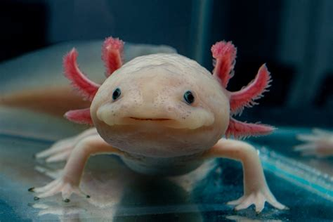

Who I am
I am Raphael. I live in Viller-saint-paul and I from Amiens. I am 13 years old. My birth day is 26 september. I have 1 sister, 1 father and mother. I also have a pet. It is 2 cats and 1 fish. I am crazy about axolotl. They are small amphibians. My dream is to have a axolotl.
